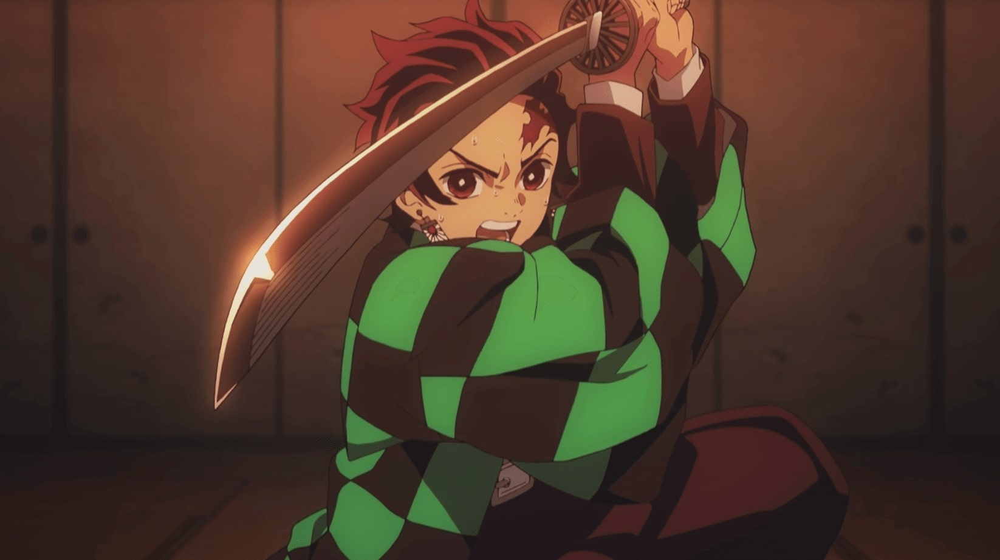

Introduction to Anime

The word anime — pronounced "ah-knee-may" — is an abbreviation of the word animation. In Japan, the word is used to refer to all animation. However, outside of Japan, it has become the catch-all term for animation from Japan.
For decades, anime was produced by and for Japan — a local product, with a distinct look-and-feel to not just the artwork but the storytelling, the themes, and the concepts. Over the last forty years, it has become an international phenomenon, attracting millions of fans and being translated into many languages. A whole generation of viewers in the West has grown up with it and are now passing it on to their own children.
Because all things anime tend to be lumped together, it's tempting to think of anime as a genre. It isn't, at least no more than animation itself is a genre, but rather a description of how the material is produced. Anime shows, like books or movies, fall into any number of existing genres: comedy, drama, sci-fi, action-adventure, horror and so on.
What Makes Anime So Special?
Most anime fans can sum this up in two words: "It's different." Anime is as unlike most American cartoons like "Batman" and "Spider-Man" are different from the comics that run in daily papers. These differences show up in many ways including the artwork storytelling, breadth of material and even cultural nuances exhibited by the characters.
Anime art styles range from the flamboyant and outlandish in shows like "Samurai Champloo" and " FLCL" to the simple and direct in shows like "Azumanga Daioh!." That said, even shows with more "basic" artwork can still be visually striking. Anime has this way of making everything look fresh and new.
It doesn't shy away from epic storylines, either, which often run for dozens (sometimes hundreds) of episodes. The best anime, though, no matter what their length, all demand great emotional involvement from the viewer.
The sheer range of anime shows out there means a fan of most any other kind of TV or movie can find an anime series that mirrors its style. For fans of hard science fiction, the show "Planetes" would be perfect for you; romantic comedy fans will love "Fruits Basket" while crimefighting lovers will enjoy "Ghost in the Shell." There are even adaptations of classical literature like "The Count of Monte Cristo."
Not only that, fans of anime also get an intimate look into Japan's history, language and worldview, woven into a great deal of anime on many levels. Some shows are takeoffs on Japanese history like "Sengoku Basara" or raid Japanese mythology for story ideas like "Hakkenden" or "Hell Girl." Even shows that are outwardly non-Japanese in their presentation like "Claymore" and "Monster" have tinges of a Japanese sensibility to them.
What's most striking is how anime's impact is coming full circle. Some recent American cartoon productions, like "Avatar: The Last Airbender," are openly inspired by anime itself, and live-action English-language versions of anime titles are starting to come into production more frequently.
What Makes Anime So Special?
Most anime fans can sum this up in two words: "It's different." Anime is as unlike most American cartoons like "Batman" and "Spider-Man" are different from the comics that run in daily papers. These differences show up in many ways including the artwork storytelling, breadth of material and even cultural nuances exhibited by the characters.
Anime art styles range from the flamboyant and outlandish in shows like "Samurai Champloo" and " FLCL" to the simple and direct in shows like "Azumanga Daioh!." That said, even shows with more "basic" artwork can still be visually striking. Anime has this way of making everything look fresh and new.
It doesn't shy away from epic storylines, either, which often run for dozens (sometimes hundreds) of episodes. The best anime, though, no matter what their length, all demand great emotional involvement from the viewer.
The sheer range of anime shows out there means a fan of most any other kind of TV or movie can find an anime series that mirrors its style. For fans of hard science fiction, the show "Planetes" would be perfect for you; romantic comedy fans will love "Fruits Basket" while crimefighting lovers will enjoy "Ghost in the Shell." There are even adaptations of classical literature like "The Count of Monte Cristo."
Not only that, fans of anime also get an intimate look into Japan's history, language and worldview, woven into a great deal of anime on many levels. Some shows are takeoffs on Japanese history like "Sengoku Basara" or raid Japanese mythology for story ideas like "Hakkenden" or "Hell Girl." Even shows that are outwardly non-Japanese in their presentation like "Claymore" and "Monster" have tinges of a Japanese sensibility to them.
What's most striking is how anime's impact is coming full circle. Some recent American cartoon productions, like "Avatar: The Last Airbender," are openly inspired by anime itself, and live-action English-language versions of anime titles are starting to come into production more frequently.